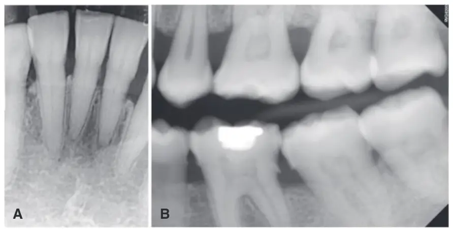
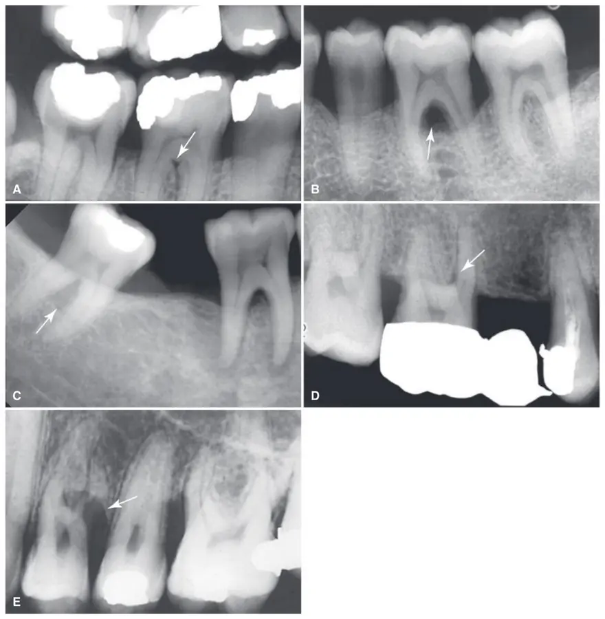

نسخه استخراجشده؛ ترجمه یا تأیید علمی انجام نشده است. وضعیت: captured
تحلیل استخوان افقی یعنی «از دست رفتن ارتفاع زائدهی آلوئولار در حالی که کرست استخوان همچنان موازی با خط فرضی رابط CEJهای دندانهای مجاور است». در این حالت «کرست صفحات کورتیکال باکال و لینگوال و استخوان بیندندانی میانشان تحلیل رفتهاند».

و شدتش بر پایهی طول ریشه سنجیده میشود — این سه پله را حفظ کن: «۱) در محدودهی ۱۵ درصد کرونال، ۲) در محدودهی ۱۵ تا ۳۳ درصد کرونال ریشه، ۳) فراتر از (یعنی آپیکالتر از) ۳۳ درصد کرونال طول ریشه.» و طبقهبندی شدت باید «بر پایهی کل طول ریشه — که فاصلهی میان CEJ و آپکس ریشه تعریف میشود — باشد».
اشتباه رایج اول: کرستِ زاویهدار که نقص عمودی نیست. «وقتی CEJهای دندانهای مجاور در سطوح متفاوتی باشند، کرست آلوئولار ممکن است ظاهر زاویهداری پیدا کند. ارزیابی دقیق خط فرضی رابط CEJهای مجاور، و نیز زاویهی تیز میان کرست استخوان و لامینا دورا، نباید با یک نقص استخوانی عمودی (زاویهای) واقعی اشتباه شود.»
اشتباه رایج دوم: سوپرارپشن و رویش پسیو. «وقتی دندانها سوپرارپت میکنند، زائدهی آلوئولار ممکن است به موقعیت جدید دندان ریمادل نشود، و نتیجهاش قرار گرفتن آپیکالِ کرست آلوئولار نسبت به CEJِ سوپرارپتشده است. این وضعیت در رویش پسیوِ دندانهای بهشدت ساییده هم رخ میدهد.» و حکمش: «در این موارد، هرچند تحلیل استخوان ناشی از پریودنتیت نیست، ممکن است به دلیل از دست رفتن اتصال پیامدهای بالینی داشته باشد.»
نقص عمودی (زاویهای، اینفرابونی): «ظاهر تحلیل استخوانی که موضعی به یک سطح ریشهی مشخص است. این نقایص وقتی پدید میآیند که تحلیل استخوان در امتداد ریشهی دندان پایین میرود و به عمیق شدن پاکت پریودنتال میانجامد.» ظاهرش «یک نقص V شکل یا مثلثی درون استخوان که از کرست آلوئولار در امتداد سطح ریشهی درگیر آپیکالی امتداد مییابد».
و نشانهی رادیولوژیک تعیینکننده: «خط بیرونی زائدهی آلوئولار باقیمانده معمولاً زاویهای مایل نسبت به خط فرضی رابط CEJ دندان درگیر و دندان مجاور نشان میدهد.» و در شکل زودرسش: «پهن شدن غیرطبیعی فضای PDL در کرست آلوئولار.»
شمار دیوارهها — تعریف دقیق: «نقص عمودی سهدیواره توصیف میشود وقتی هر دو صفحهی کورتیکال باکال و لینگوال دستنخورده باقی ماندهاند. دودیواره است وقتی یکی از این صفحات تحلیل رفته، و تکدیواره وقتی هر دو از دست رفتهاند.» و «تمایز میان این گروهها در طراحی طرح درمان مهم است».
ولی روی تصویر داخلدهانی نمیتوانی بشماری: «شمار دیوارههای یک نقص عمودی روی تصاویر داخلدهانی دشوار یا ناممکن است، چون یکی یا هر دو صفحهی کورتیکال ممکن است روی نقص سوپرایمپوز بمانند.» بهترین راه: «بازرسی بالینی و جراحی بهترین وسیله برای تعیین شمار دیوارههای استخوانی باقیمانده است.» و «CBCT هم میتواند نقص را روشنتر توصیف کند، هرچند نباید بهطور روتین برای این منظور به کار رود».
و یک ترفند قدیمی و مؤثر: «دیدن عمق پاکتها میتواند با وارد کردن یک مخروط گوتاپرکا درون پاکت پیش از گرفتن تصویر داخلدهانی کمک شود. مخروط به نظر میرسد نقص را دنبال میکند، چون گوتاپرکا نسبتاً غیرقابلانعطاف و رادیواوپک است.»
کریتر بیندندانی: «یک نقص دودیوارهی ناودانیشکل یا فرورفتگی که در کرست زائدهی آلوئولار میان دندانهای مجاور پدید میآید، و دیوارههای کورتیکال بیرونی باکال و لینگوال استخوان بیندندانی کرونالتر از استخوان اسفنجی تحلیلرفتهی میانشان امتداد مییابند.» روی تصویر: «یک ناحیهی نواریشکل یا نامنظم از استخوان با دانسیتهی کمتر در کرست، بلافاصله مجاور استخوان نرمالِ متراکمترِ آپیکالتر از قاعدهی کریتر.»
و چرا در خلفی شایعتر است؟ «به دلیل بُعد باکولینگوال پهنترِ کرست آلوئولار در این نواحی.»
از دست رفتن صفحهی کورتیکال باکال یا لینگوال «میتواند تنها رخ دهد یا همراه با نوع دیگری از تحلیل استخوان، مثل تحلیل افقی». روی تصویر: «افزایش رادیولوسنسی ریشهی دندان نزدیک کرست آلوئولار».

شکلش را حفظ کن: «شکل دیدهشده معمولاً نیمدایرهای است، با عمق رادیولوسنسی به سمت آپیکال نسبت به دندان.» و هشدارش: «نبود تحلیل استخوان در ناحیهی بیندندانی میتواند کشف این نوع نقص را روی تصاویر معمول دشوار کند.»
حالا فورکیشن. «با پیشرفت تحلیل استخوان به سمت آپیکال در امتداد سطح یک دندان چندریشه، استخوان پوشانندهی ریشه میتواند به سطح فورکیشن یا آپیکالتر برسد.»
نخستین نشانه — این را جدی بگیر: «پهن شدن فضای PDL در رأس کرست استخوانی فورکیشن، شاهد قوی بر درگیر بودن فورکیشن در فرایند بیماری پریودنتال است.»
و مرحلهی بعد: «اگر تحلیل استخوان کافی در سطح باکال یا لینگوال فورکیشن مولر مندیبل رخ داده باشد، تصویر رادیولوسنت نقص فورکیشن برجسته میشود.» و اگر نقص «تنها صفحهی کورتیکال باکال یا لینگوال را درگیر کند و به سقف فورکیشن و آپیکالتر امتداد یابد» — در حالتی که از صفحهی مقابل عبور نکرده — «درگیری فورکیشن نامنظمتر و رادیولوسنتتر از استخوان نرمال مجاور به نظر میرسد».
دو چیزی که فورکیشن را پنهان میکنند: «در مندیبل، ریج مایل خارجی ممکن است درگیری فورکیشن مولرهای سوم را بپوشاند.» و «ریشههای همگرا هم ممکن است نقایص فورکیشن را در مولرهای دوم و سوم ماگزیلا و مندیبل مخدوش کنند».
و فورکیشن ماگزیلا سختتر است: «از دست رفتن استخوان بینریشهای در فورکیشن مولر ماگزیلا میتواند از سطوح باکال، مزیال یا دیستال منشأ بگیرد. شایعترین مسیر درگیری فورکیشن مولر اول دائمی ماگزیلا، از سطح مزیال دندان است.» و «تصویر درگیری فورکیشن پیرامون مولرهای ماگزیلا به وضوحِ پیرامون مولرهای مندیبل نیست، چون ریشهی پالاتال روی نقص سوپرایمپوز میشود».
و دو ظاهر مشخص که باید بشناسی: «این الگوی تخریب استخوان گاهی برجسته است و بهصورت یک رادیولوسنسی «J» وارونه ظاهر میشود، با قلاب «J» که به درون تریفورکیشن امتداد مییابد» — یا بهصورت «یک مثلث رادیولوسنت سوپرایمپوز بر ریشههای دندان درگیر با رأسی که به سمت فورکیشن نشانه رفته».
و حرف آخر: «تشخیص قطعی ناهنجاریهای پیچیدهی فورکیشن نیازمند معاینهی بالینی دقیق و گاهی اکسپلوریشن جراحی است.» CBCT هم میتواند درگیری را تأیید و نقایص استخوانی فورکیشن را دقیقتر توصیف کند، «در مواردی که این اطلاعات برای طرح درمان ضروری است».
نوع سؤال: ساخت کلمه · 3 خانه
حروف منبع: L · P · D